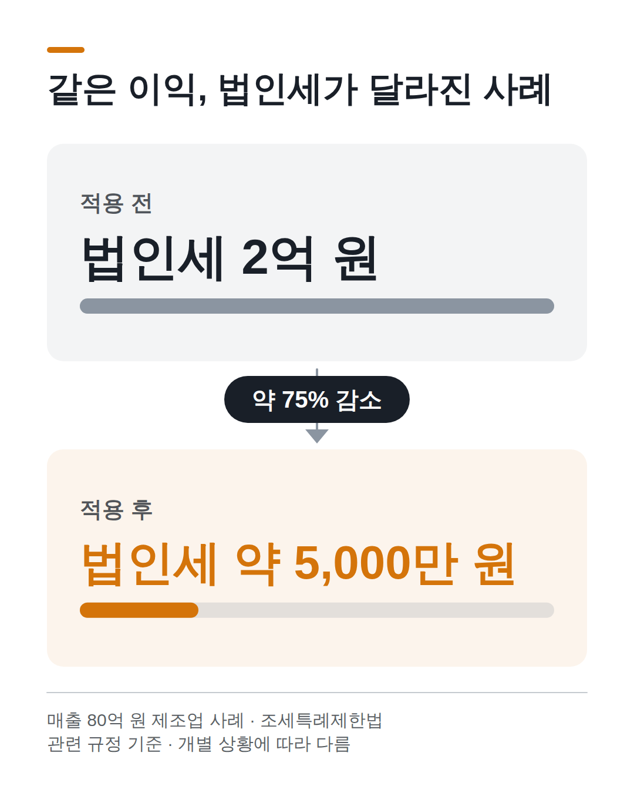
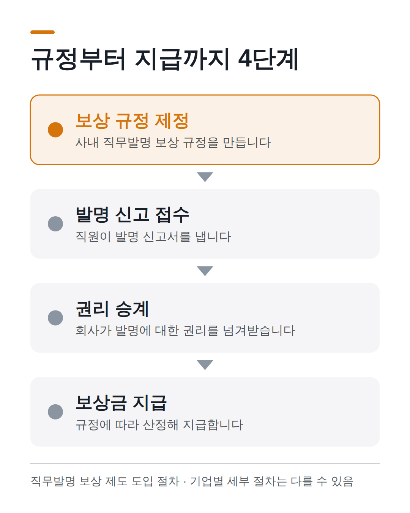
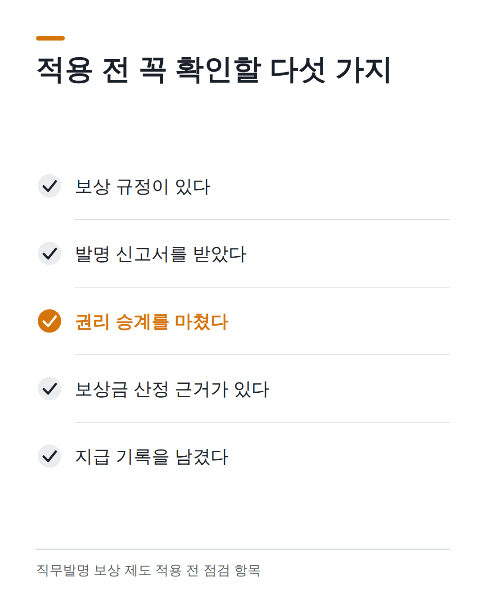

인포그래픽 미리보기
T · 썸네일
— top
ALT: 직무발명보상금 법인세 사례 썸네일 이미지
경고 없음

A · 비교
— p:4
ALT: 직무발명보상금 적용 전후 법인세 비교 인포그래픽
경고 없음

B · 프로세스
— p:7
ALT: 직무발명보상금 도입 4단계 절차 인포그래픽
경고 없음

E · 체크리스트
— p:10
ALT: 보상금 제도 적용 전 점검 체크리스트
경고 없음